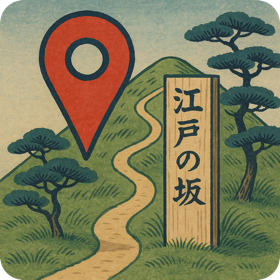
The Hills of Edo 江戸の坂
Explore Tokyo on Foot 港区で楽しむ現地体験
Explore Tokyo's Minato Ward to find 79 historic Edo-period hills. Use the in-game map to locate and capture markers at each hill's top and bottom, unlocking historical details about the city's transformation. Progress through ten samurai ranks or team up in cooperative mode for shared challenges and mini-games. 東京・港区を歩いて、江戸の面影を残す79の坂を巡ろう。アプリ内の地図を使って各坂に辿り着き、上下の標識を確保するたびに、江戸から現代へと移り変わる東京の歴史が明らかになる。全ての坂を制覇して10の武士の位階を登りつめるもよし、協力モードでパートナーと共にユニークなチャレンジやミニゲームに挑むもよし。


Screenshots スクリーンショット
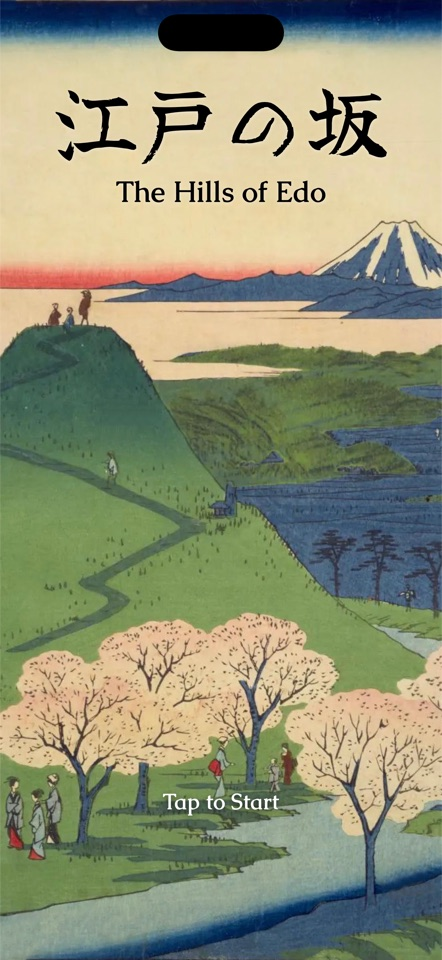
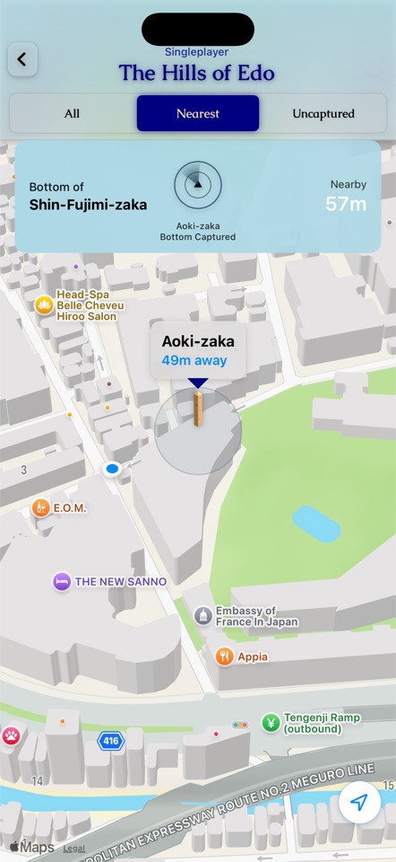
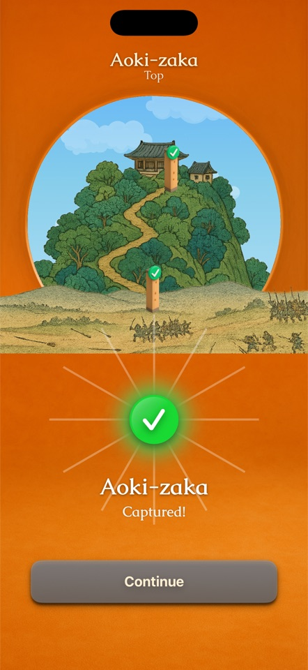
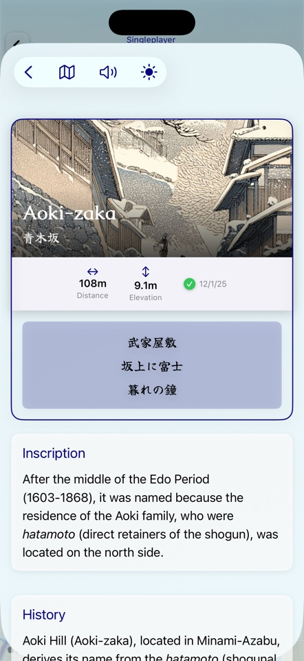
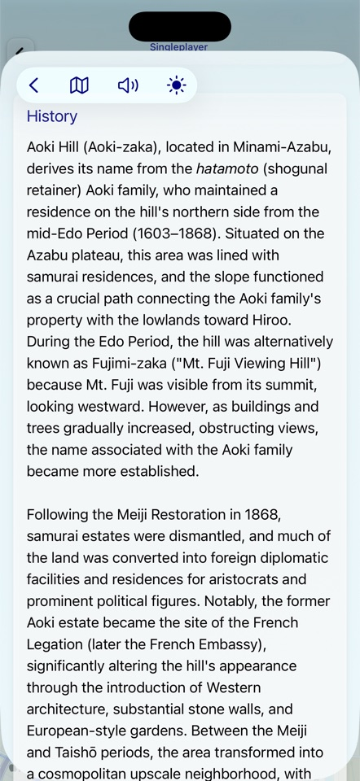
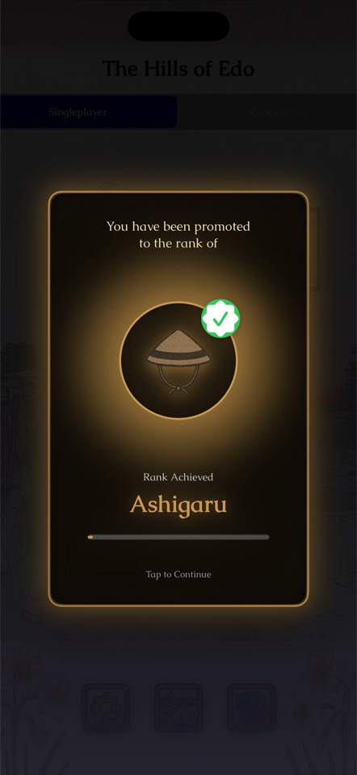
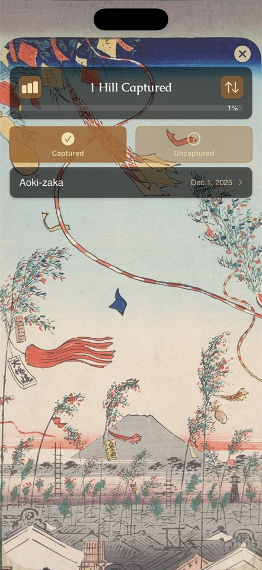
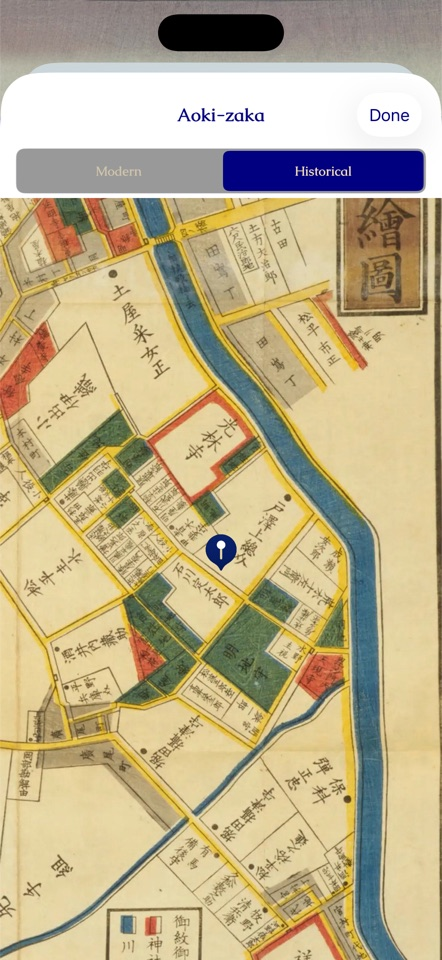
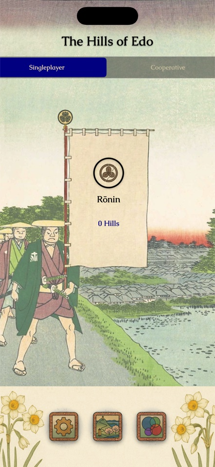
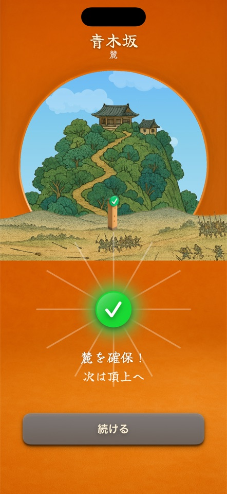
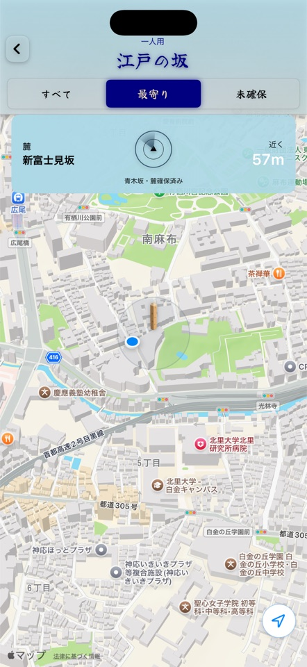
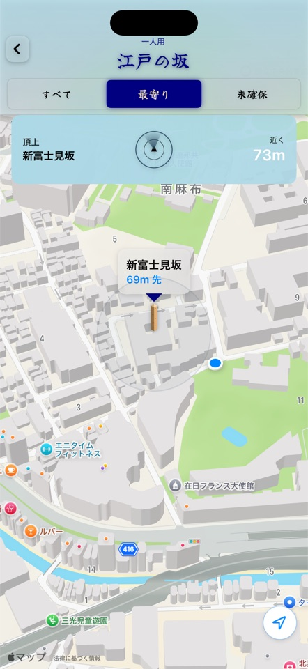
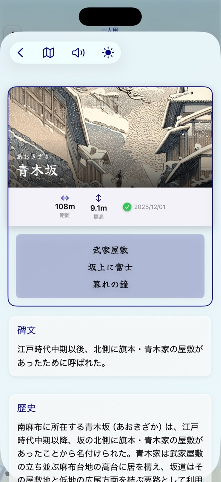
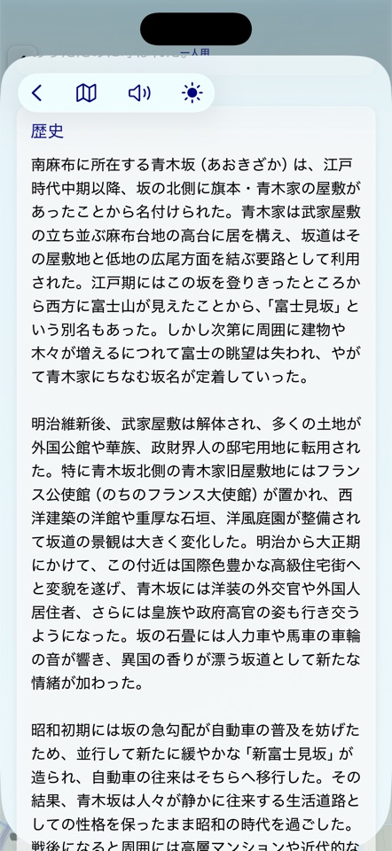
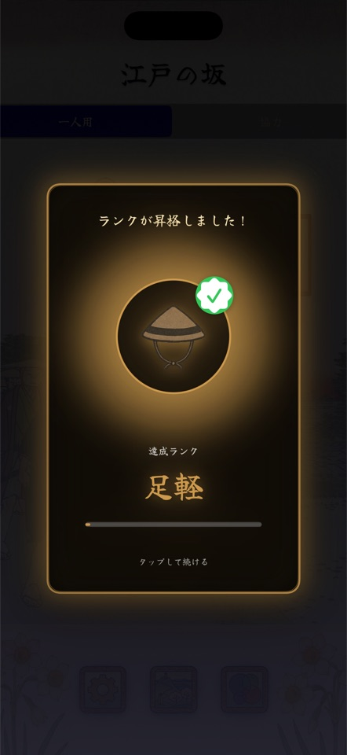
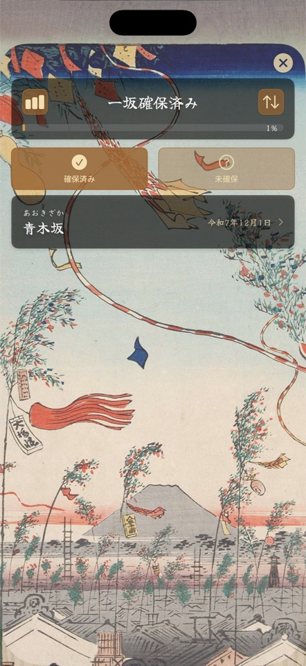
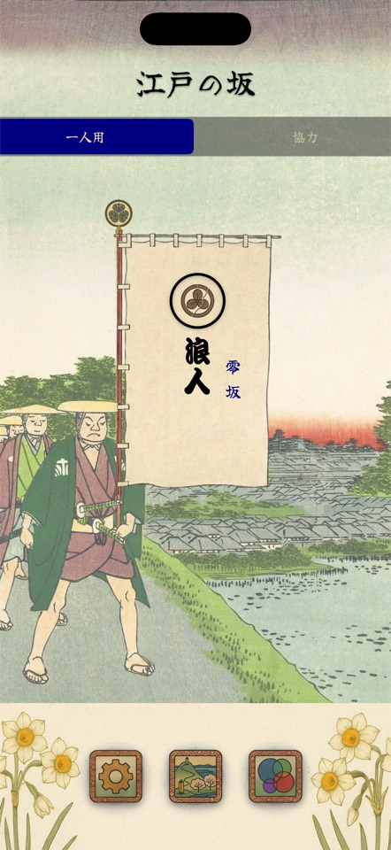
Features 特徴
79 Historic Hills79の歴史ある坂
Discover every hill of Edo-period Tokyo, each with its own history, haiku, and name origin.江戸時代の東京に残る坂を一つ一つ巡り、それぞれの歴史や由来、俳句を発見しましょう。
GPS Navigation & CaptureGPSナビゲーションで確保
Use the in-game map to navigate to each hill, then capture its top and bottom markers once you're in range.アプリ内の地図で坂へ向かい、標識の近くで上下の標識を確保します。
Ten Samurai Ranks10の武士の位階
Rise from Ronin to Shogun as you capture more hills.坂を確保するごとに、浪人から将軍へと位階を登りつめます。
Game Center Integrationゲームセンター連携
Compete on leaderboards, unlock achievements, and compare progress with friends.リーダーボードで競い合い、実績を解除し、友達と進行状況を比較できます。
Bilingual日本語・英語対応
Fully playable in English and Japanese.日本語と英語、両方で完全にプレイ可能です。
AR & Sensor Mini-GamesAR・センサーミニゲーム
Point your camera, call out to your partner, or steady your grip — cooperative hills turn your own phone into part of the challenge.カメラを構え、パートナーに声をかけ、手元を安定させる——協力プレイの坂では、スマートフォンそのものがチャレンジの一部になります。
Cooperative Mode 協力モード
Team up with a partner as lord and retainer to tackle unique challenges — AR encounters, voice puzzles, and proximity-based mini-games — at twelve specially designed hills. パートナーと主君・家臣として協力し、AR、音声認識、位置連携などを使ったユニークなチャレンジに、特別に設計された12の坂で挑みます。
How to Play: Singleplayer 一人用の遊び方
Hill Map地図
Exploring the map through various views:地図の表示方法:
- All — Shows all 79 hills and their current capture state.すべて — 79本すべての坂とその確保状況を表示します。
- Nearest — Shows only the nearest marker to your current position.最寄り — 現在位置に最も近い坂のみを表示します。
- Uncaptured — Shows only the remaining uncaptured hills.未確保 — 未確保の坂のみを表示します。
Hill markers:坂の標識:
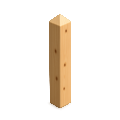
Proximity Alert:近接アラート: A banner pops up automatically when you approach the nearest uncaptured hill, displaying the hill's name and live distance. The distance for the proximity banner can be adjusted in the Settings. 未確保の坂に近づくと、坂の名前と現在地からの距離を示すバナーが表示されます。このアラート距離は設定で調整可能です。
Map Hill Marker:地図のマーカー: The map does not show the precise location of the top and bottom markers but indicates the physical geographic center of the hill, midway between its top and bottom. If the map marker appears in the middle of a road, please note the actual capture point is not located in the street itself. 地図上のマーカーが道路の真ん中に表示されている場合、実際の確保位置は道路自体にはないことに注意してください。地図は坂の頂上と麓の標識の正確な位置を示していませんが、坂の頂上と麓の間の中点にある実際の地理的中心を示しています。
Capturing確保
Capturing Screen:確保画面: The capturing screen will activate automatically when you are within range of a marker. 標識の近くまで来ると、確保画面が自動的に表示されます。
Capture Process:確保の流れ: The button to begin capture becomes active once the marker is within sight. If the battle to capture goes badly, you have three chances to "Rally" your forces or try again. You may "Surrender" at any time, but surrendering results in the hill being lost in battle. Three failed rallies will result in the battle being lost. 標識が視界に入ると、確保ボタンが押せるようになります。もし確保の戦況が悪化した場合、あなたは3回まで部隊を「立て直し」て再試行できます。「降伏」すればいつでも確保を諦められますが、降伏するとその坂は一時的に確保不能になります。3回立て直しに失敗すると、その坂での戦いは敗北となります。
Rank Banner位階の旗
The flag banner on the main menu opens a screen with detailed progress and tracking of both captured and uncaptured hills. Tapping a captured hill shows its detailed card — distance, elevation, historical background, and the marker's inscription. Tapping an uncaptured hill shows that hill on the map. メインメニューののぼり旗は、確保済みおよび未確保の坂の詳細な進行状況と記録を表示するボタンです。確保済みの坂をタップすると、距離、標高、歴史的背景、標識の碑文などの情報が記載された詳細カードが表示されます。未確保の坂をタップすると、その坂が地図に表示されます。
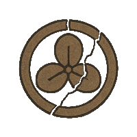
0 hills0坂
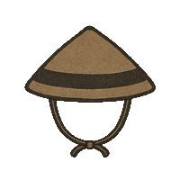
1 hills1坂
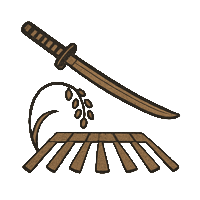
10 hills10坂
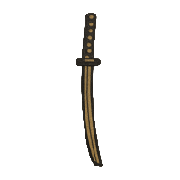
20 hills20坂
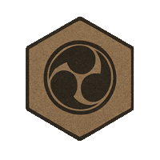
30 hills30坂
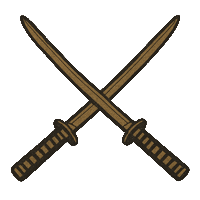
40 hills40坂
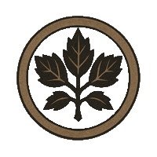
50 hills50坂
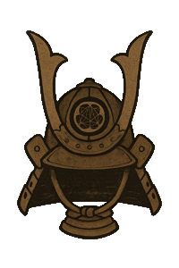
60 hills60坂
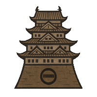
70 hills70坂
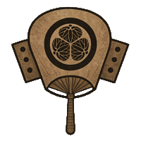
79 hills79坂
Maps:地図: Each hill card can display either a contemporary modern map or a historical map based on the *Edo Kiriezu* — detailed woodblock-printed sectional maps of Edo created between 1849 and 1862. 各坂カードでは、現代の地図または古地図のいずれかを表示できます。古地図は「江戸切絵図」に基づいており、これは1849年から1862年にかけて作成された、江戸の詳細な木版刷りの分割地図です。
Social Featuresソーシャル機能
- Game Center — Sign in to compare progress with friends, track achievements, and compete on leaderboards.ゲームセンター — サインインすることで、友達との進行状況の比較、実績の追跡、リーダーボードでの競争が可能になります。
- Friends — Connect with Game Center friends to compare hill capture progress and ranks.友達機能 — ゲームセンターの友達とつながり、お互いの坂の確保進行状況や位階を比較できます。
- Achievements — Unlock achievements by capturing hills and rise through the ranks.実績システム — 坂を確保したり特定の目標を達成したりすることで実績を解除できます。
- Leaderboards — Compete worldwide based on the number of hills captured.リーダーボード — ゲームセンターのリーダーボードで友達や世界中のプレイヤーと確保した坂の数を競い合えます。
Free Tier & Purchases無料版と購入
- Free to Start — Capture your first 10 hills for free. A one-time purchase unlocks all 79.無料でスタート — 最初の10坂は無料で確保できます。その後、一度の購入で全79坂がアンロックされます。
- Unlock Options — Purchase singleplayer, cooperative, or both modes together at a discounted price.アンロックオプション — 一人用アクセス、協力アクセス、または割引価格で両モードをまとめてアンロックできます。
- Upgrade — Already own one mode? Add the other at a reduced upgrade price.アップグレード — すでに一つのモードをお持ちですか？もう一つを割引アップグレード価格で追加できます。
- Restore Purchases — Reinstalled the app or switched devices? Restore your purchases from Settings.購入を復元 — アプリを再インストールしたりデバイスを変更しましたか？設定から購入を復元できます。
Tipsヒント
- Most hills require capturing both the top and bottom markers, but a few hills have only one marker.多くの坂は頂上と麓の両方の標識を確保する必要がありますが、一部の坂には標識が一つしかありません。
- Lost hills may be captured by returning the next day or capturing the next nearest hill.一度確保に失敗したか降伏した坂は、翌日になるか、他の未確保の坂を確保することで再挑戦できるようになります。
- The compass on the capture screen points to the marker with live distance updates.確保画面のコンパスは標識の方向と距離（リアルタイム更新）を示しています。
How to Play: Cooperative 協力の遊び方
More cooperative hill challenges will be added in future updates.今後のアップデートで、協力チャレンジの坂が追加されます。
Before You Start始める前に
- System Requirements:必要な端末: iPhone 11 or later (excluding iPhone SE and iPhone 16e).iPhone 11以降（iPhone SEとiPhone 16eを除く）。
- Two Players:二人で協力: Cooperative mode is designed for two players who are physically together.協力モードは、同じ場所にいる二人でプレイすることを前提としています。
- Game Center:ゲームセンター: Sign in to Game Center on both devices before starting a cooperative session.協力セッションを始める前に、両方の端末でゲームセンターにサインインしてください。
- Cooperative Permissions:協力モードの初回許可: Cooperative play requires "Always" location access, enabling the richer, sensor-based gameplay used by cooperative challenges.協力プレイには位置情報の「常に許可」が必要です。これらの許可により、センサーを活用したより豊かな協力チャレンジが楽しめます。
Matchmakingマッチメイク
- Form a Squad:隊を編成する: On the Cooperative map, tap the round crest button to start matchmaking and connect to the other player nearby.協力マップ上で丸い家紋ボタンをタップすると、マッチメイキングが始まり、近くにいるプレイヤーと接続できます。
- Choose Your Crest:家紋を選ぶ: After matchmaking, players select a crest — the Lord selects first, then the Retainer confirms.マッチング完了後、家紋を選びます。主君が先に選択し、その後家臣が確認・決定します。
- Roles:役割: Cooperative challenges use two roles: Lord and Retainer. Each device shows role-specific instructions.協力チャレンジには二つの役割があります：主君と家臣。端末ごとに役割に応じた指示が表示されます。
- How the Lord Is Chosen:主君の決まり方: Roles are assigned based on singleplayer progress — the player with more hills captured becomes the Lord.役割は一人用モードの進行状況に基づいて決まります。より多くの坂を確保しているプレイヤーが主君となります。
Cooperative HUD協力HUD
- A heads-up display appears at the top of your screen during challenges, showing the current hill's name and each player's Game Center name, icon, and role.協力チャレンジ中は、画面上部にHUDが表示され、現在挑戦中の坂の名前と、二人のGame Center名・アイコン・役割が確認できます。
- GPS distance:GPS距離: Shows your distance to the current objective, often the hill's top marker.現在の目標までの距離を表示します。多くの場合、坂の頂上の標識までの距離です。
- Player distance:プレイヤー間距離: Shows the distance between the two players.二人の間の距離を表示します。
- Player status:プレイヤーステータス: A short state message reflects each player's current status or action.各プレイヤーの現在の状態や行動を反映する短い状態メッセージを表示します。
- Status color:ステータス色: Green generally means correct positioning; orange or red means adjustment is needed.一般に緑は条件を満たしていることを示し、オレンジや赤は位置調整が必要なことを示します。
Connection Indicator接続表示
The icon in the top-right shows the stability of the network connection between players. Green = stable, red = communication problems, purple = reconnecting, gray = disconnected. If you see a warning color, stay close together and wait briefly — many issues resolve automatically.右上のアイコンは、二人のプレイヤー間のネットワーク接続の安定性を示します。緑は安定した接続、赤は通信の問題、紫は再接続中、グレーは切断を意味します。アイコンが警告色になったときは、できるだけ近づいて少し待ちましょう。多くの問題は自動的に解消されます。
Cooperative Gameplay協力プレイ
- Starting challenges:チャレンジの開始: Triggered when both players are at the hill top marker location.協力チャレンジは、二人が坂の頂上にある標識の場所に揃うと始まります。
- Retry a failed challenge:失敗したチャレンジを再挑戦: Travel together to the hill's bottom marker to clear the lost state and try again.仲間と一緒に坂の麓にある標識まで移動すれば、失敗状態をリセットして再挑戦できます。
- Leaving a challenge:チャレンジから退出: Simply move away from the hill — both players return to the Map view.坂から離れれば退出できます。退出すると、二人とも地図画面に戻ります。
- Shared outcome:結果は共有: Success and failure are shared — your team wins and loses together.成功も失敗も二人で分かち合います。
Free Tier & Purchases無料版と購入
- Complete your first 5 cooperative challenges for free. A one-time purchase unlocks all current and future cooperative missions.最初の5つの協力チャレンジは無料で完了できます。その後、一度の購入で現在および将来のすべての協力ミッションがアンロックされます。
- Purchase cooperative access, singleplayer access, or unlock both modes together at a discounted price.協力アクセス、一人用アクセス、または割引価格で両モードをまとめてアンロックできます。
Tipsヒント
- Talk to each other and confirm readiness before starting key moments in a challenge.チャレンジ中の重要な場面では、互いに準備ができているか確認してから進めましょう。
- Agree on a plan before starting each challenge.チャレンジを始める前に、二人で作戦を決めておきましょう。
- Keep your battery charged — cooperative play can use more power.協力プレイはバッテリー消費が多くなりがちです。十分に充電しておきましょう。
- Play safely! Stop and look around before interacting with your device.安全にプレイしましょう！端末を操作する前に、立ち止まって周囲を確認してください。
Cooperative Hill Challenges 協力チャレンジの坂
Twelve hills feature unique two-player challenges — several built around AR. Here's a taste of each — no spoilers. 12の坂に、二人用のユニークなチャレンジが用意されています（いくつかはARを使用）。ネタバレなしで、それぞれをご紹介します。
-
Anzenji-zaka (安全寺坂)安全寺坂
A vanished temple once rang its bell across this slope. Descend together to bring Anzenji back to life — but restoring a lost sound takes more than one pair of hands. この坂にはかつて江戸中に響いた寺の鐘があった。失われた安全寺を二人で蘇らせよう——消えた音を取り戻すには、一人の力だけでは足りない。 -
Gyoran-zaka (魚籃坂)魚籃坂
A sacred koi rises from otherworldly waters at Gyoran-zaka. Carry it safely down the slope in ceremonial procession — one wrong move, and the offering slips away. 魚籃坂では、常世の水底から神聖な鯉が現れる。荘厳な行列で坂を下り、その供物を無事に届けよう——気を抜けば、鯉は逃げてしまう。 -
Hebi-zaka (蛇坂)蛇坂
Something far larger than a snake now coils across Hebi-zaka. Getting past its watchful gaze will take more than luck — and more than one player. 蛇坂には、蛇よりもずっと大きな何かが今も巻きついている。その鋭い視線をかいくぐるには、運だけでは足りない——そして、一人だけでも足りない。 -
Hijiri-zaka (聖坂)聖坂
Among the pilgrims gathered on Hijiri-zaka, not everyone is who they claim to be. Work together to see through the disguise before time runs out. 聖坂に集まった巡礼者たちの中に、素性を偽る者が紛れている。刻限が来る前に、二人で真贋を見極めよう。 -
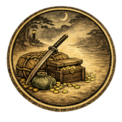
Hiyoshi-zaka (日吉坂)日吉坂
Danger once lurked in the shadows of Hiyoshi-zaka after dark. Descend together and stay alert — this slope doesn't forgive a moment's carelessness. 日吉坂には、日が暮れると危険が潜んでいたという。二人で油断なく坂を下ろう——一瞬の隙も許されない。 -
Katsura-zaka (桂坂)桂坂
A vain traveler's secret was once exposed by a sudden gust on Katsura-zaka. History threatens to repeat itself — can the two of you keep your composure when the wind rises? かつて桂坂では、突然の風が旅人の秘密を暴いたという。二人は同じ運命を繰り返さずに済むか——風が吹き始めたとき、平静を保てるかが鍵となる。 -
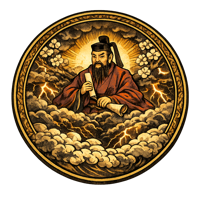
Kuwabara-zaka (桑原坂)桑原坂
Storm clouds gather over Kuwabara-zaka. An old superstition once kept travelers safe from the thunder here — see if the two of you remember it in time. 桑原坂に嵐の気配が近づく。かつてこの地には、雷から旅人を守る言い伝えがあったという——二人でその言葉を思い出せるか。 -
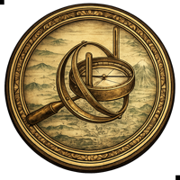
Hora-zaka (洞坂)洞坂
The steepest, most twisting slope in Edo has never been easy to measure. Two sets of eyes and two sets of feet will have to work together to map it properly. 江戸で最も急で曲がりくねった坂は、これまで正確に測るのが難しかった。二人の目と二人の足を合わせなければ、この坂を測り切ることはできない。 -
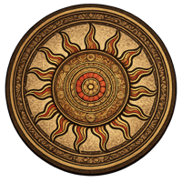
Sankō-zaka (三光坂)三光坂
Three stone statues watch over Sankō-zaka, each marking a stage on the road to enlightenment. Reaching the bottom takes more than walking — the two of you will need to read what the statues are trying to tell you. 三光坂に佇む三体の石像が、悟りへの道の各段階を見守っている。坂を下りきるには、ただ歩くだけでは足りない——石像が語りかける何かを、二人で読み解く必要がある。 -
Shiomi-zaka (潮見坂)潮見坂
The tide that once defined the view from Shiomi-zaka has long since vanished from sight. Move in rhythm with your partner to bring its ebb and flow back to life. 潮見坂からかつて見えた潮の満ち引きは、今はもう見えない。二人で息を合わせて動き、その流れをもう一度感じ取ろう。 -
Yūrei-zaka (幽霊坂)幽霊坂
A vengeful spirit haunts Yūrei-zaka after dark, and only lantern light can hold it at bay. Keep the flame alive together, or be swallowed by the dark. 夜の幽霊坂には怨霊が棲みつき、灯火の光だけがそれを退ける。二人で灯りを絶やさぬよう協力せよ——さもなくば、闇に飲まれる。 -
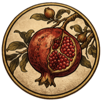
Zakuro-zaka (柘榴坂)柘榴坂
Pomegranate trees still line the old Satsuma estate grounds on Zakuro-zaka. Working together on the way down pays off — the two of you will want good timing and good hands. 柘榴坂には、かつての薩摩藩邸に植えられた柘榴の樹が今も並ぶ。坂を下りながら息を合わせれば、きっと実りがある——タイミングと呼吸が鍵となる。
Camellia (Tsubaki)椿
Camellia blooms through the coldest months, its bold red petals a rare spot of color against winter's grey.冬の寒さの中に咲く椿は、灰色の景色に映える鮮やかな赤い花を咲かせる。
Plum Blossom (Ume)梅
Plum blossoms are the first flowers of the year in Edo, opening while snow may still linger on the branches.梅は江戸で一年の最初に咲く花で、枝にまだ雪が残る頃に開花する。
Cherry Blossom (Sakura)桜
Cherry blossoms sweep across Tokyo each spring, their fleeting beauty long celebrated with hanami gatherings.桜は春の東京を彩り、その儚い美しさは古くから花見で愛でられてきた。
Wisteria (Fuji)藤
Wisteria drapes in cascading violet clusters each April, a favorite subject of Edo-period woodblock prints.藤は4月になると紫の房を垂らして咲き、江戸時代の浮世絵にもたびたび描かれた。
Azalea (Tsutsuji)つつじ
Azaleas blanket Tokyo's hillsides in May, once cultivated so widely in Edo that whole neighborhoods were named for them.つつじは5月に東京の坂道を彩り、江戸時代には栽培が盛んで町名の由来にもなった。
Hydrangea (Ajisai)紫陽花
Hydrangea marks the rainy season, its blue petals said to shift in hue with the soil beneath them.紫陽花は梅雨の訪れを告げる花で、土壌によって色合いが変わるといわれている。
Morning Glory (Asagao)朝顔
Morning glories open at dawn and close by noon — Edo's Iriya district still holds a festival in their honor every July.朝顔は夜明けに咲き昼には閉じる花で、入谷では今も7月に朝顔まつりが開かれる。
Sunflower (Himawari)ひまわり
Sunflowers turn to follow the summer sun, their bright faces a modern symbol of Tokyo's hottest month.ひまわりは夏の太陽を追うように咲き、東京の最も暑い月を象徴する花となっている。
Fragrant Olive (Kinmokusei)金木犀
Fragrant olive announces autumn's arrival with a sweet scent, often noticed before its small orange blossoms are seen.金木犀は小さな橙色の花が目に入る前に、甘い香りで秋の訪れを知らせる。
Cosmosコスモス
Cosmos sway through October fields, their name borrowed from the Greek word for harmony — fitting for autumn's gentle close.コスモスは10月の野を揺れながら彩り、その名は調和を意味するギリシャ語に由来する。
Maple Leaves (Momiji)紅葉
Maple leaves turn brilliant red and gold in November, drawing crowds to Tokyo's gardens for centuries of autumn viewing.紅葉は11月に赤や黄金色へと色づき、何世紀にもわたり東京の庭園に人々を惹きつけてきた。
Narcissus (Suisen)水仙
Narcissus blooms through Tokyo's mild winters, its quiet fragrance one of the last of the year.水仙は東京の穏やかな冬に咲き、その静かな香りは一年の締めくくりを彩る。